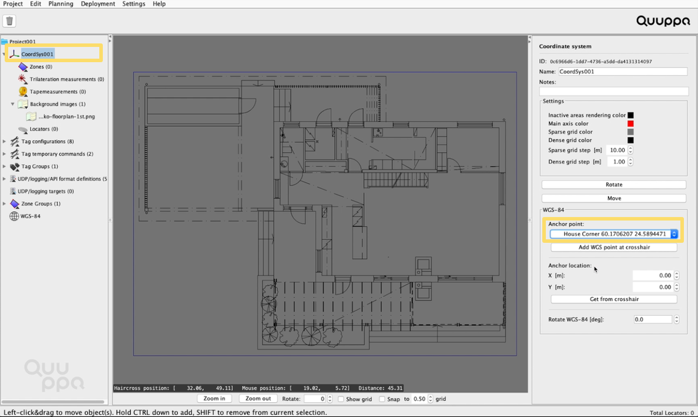

Add WGS-84 Coordinates to a Project
Once the WGS-84 Coordinates feature is enabled for your QSP, you can associate WGS-84 Coordinates to your project plan. Follow the instructions below to do so.
- Open your project in the QSP. For more information about setting up a new project, please see the Quuppa Development Kit Quick Start Guide.
-
Add at least three WGS-84 points to be used as reference points to your
WGS-84 coordinate system by following the steps below. The first point is used
to match the WGS-84 coordinates with the Quuppa project coordinates. The second
point is used to scale the reference image and the third to verify that
everything looks good.
Note: You will need to know both the longitude and latitude values for all of the reference points that you want to use. Please note that the accuracy of your reference points will directly affect the accuracy of the system.
- Select the WGS-84 object in the object tree on the left.
- In the panel that opens on the right, click the Add WGS84 point button.
- Give the WGS-84 point a name and enter the latitude and longitude values for the point.
- Repeat for the second and third points.Note: You can also add more than three reference points.
- Now you will see crosshair points in the map view of the QSP indicating the WGS-84 points that you just added.
-
Import a reference image (e.g. a city plan or Google Earth image) for the
project as the WGS-84 image by following the steps below:
Note: The use of a reference WGS-84 image is recommended, as it provides a visual confirmation that the coordinate system and the project are correctly aligned (you can even add multiple reference images if you wish). However, it's optional and the project can be linked to the added WGS-84 coordinates without a reference image. If you don't want to add a reference image, skip ahead to step 5.
- In the object tree on the left, expand the WGS-84 object by clicking it.
- Right-click on the WGS-84 Images (0) object that appears.
- Upload the WGS-84 image that you want to use from your computer.Note: The image will be added to the project file in the QSP, but will not show in the map view yet as it has not been scaled or positioned. You can check that the image was added successfully by checking the object tree on the left:
-
Use two anchor points to scale and position the WGS-84 image by
following the steps below:
- Select the WGS-84 image that you want to scale in the QSP from the object tree on the left.
- Add two anchors for the WGS-84 image by selecting the WGS-84 points from the drop down menus in the panel on the right.
- Once you have provided the two anchor points, the WGS-84 image will become visible in the map view, although it will not yet be scaled or positioned correctly relative to the anchor points.
- To position the WGS-84 image, add a crosshair to the point in the image
where the first anchor point should be by right-clicking the image in
this spot. Then, in the panel on the right, click the Get
Anchor from crosshair button. Tip: Place the crosshair as best you can, keeping in mind that the quality of the reference image and/or the thickness of the lines used in the image can affect how accurately it is possible to place the anchor point. For example, a thin line in a building plan can indicate a wall that is 10-20 cm thick in reality.Tip: If you are having trouble seeing the crosshair due to the background image, you can use the Alpha slider in the panel on the right to adjust the transparency of the background image.
-
Link the WGS-84 coordinate system to the other coordinate systems in your
project file by following the instructions below:
Note: The best measurements that you have are the ones that you've taken yourself and can check in the physical space. For this reason, always aim to scale the WGS-84 reference image to the project image rather than the other way round.
- In the object tree on the left, navigate to the project's coordinate system.
- In the panel on the right, add a WGS-84 anchor point from the drop down
menu.

Tip: To show the WGS-84 image and the project background image overlapping, select Background images in the object tree on the left and in the panel that appears on the right, check the box for the WGS-84 image that you want to show in the map view.The WGS-84 image will appear behind the background image. You can adjust the transparency of the image by selecting the background image in the object tree on the left and using the Alpha slider in the panel on the right. You can also change the order of the background images by clicking the Change the order of BG images in the same panel.
- To position the anchor point correctly on the background image, add a crosshair to the point in the background image where the anchor point should be by right-clicking the image in this spot. Then, in the panel on the right, click the Get from crosshair button.
- Use the Rotate WGS-84 [deg] setting in the panel on the right to rotate the WGS-84 image and the WGS-84 coordinate system so that it aligns with the project’s background image. It is important to align the two coordinate systems as accurately as possible to make sure that global coordinates given for tracking results truly represent the results relative to the global coordinates.
The WGS-84 coordinates and the reference WGS-84 image if used should now match with the background image.